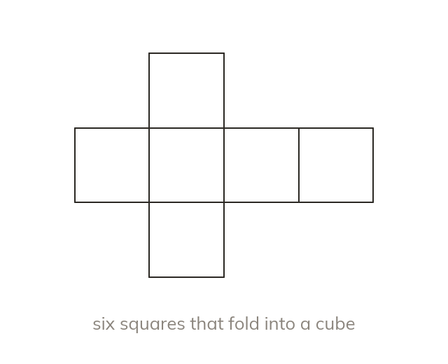
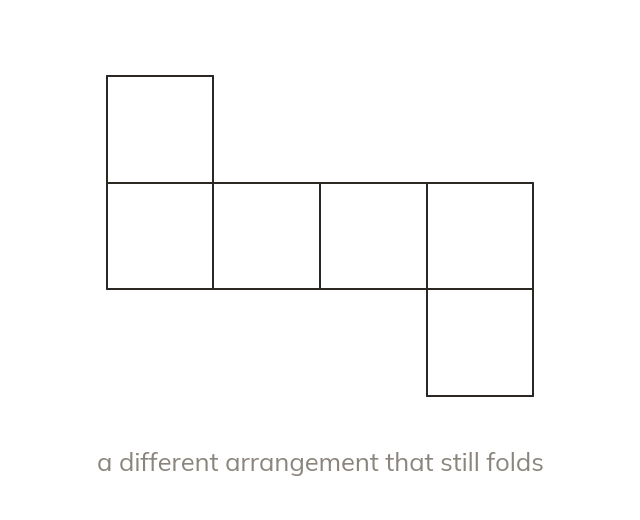
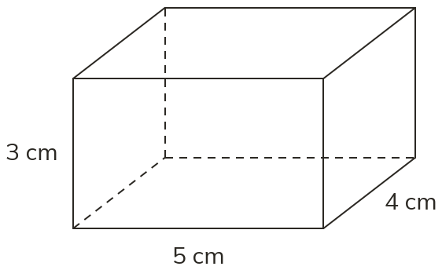
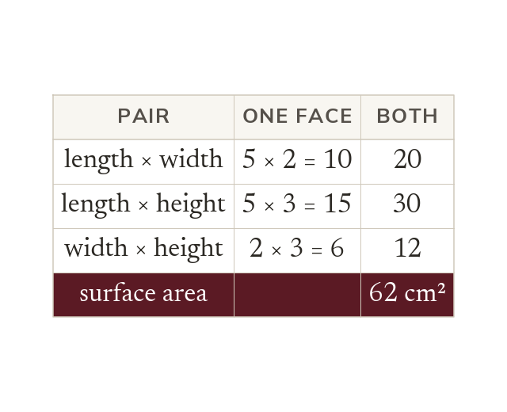
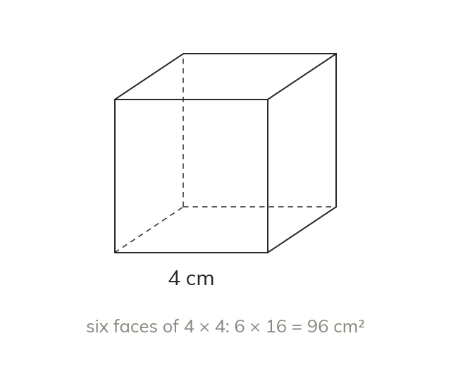
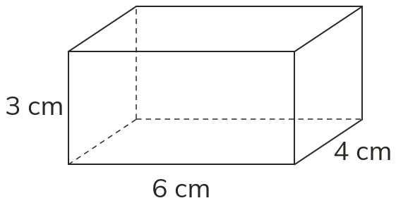
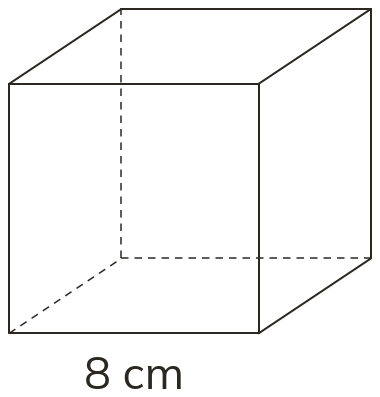
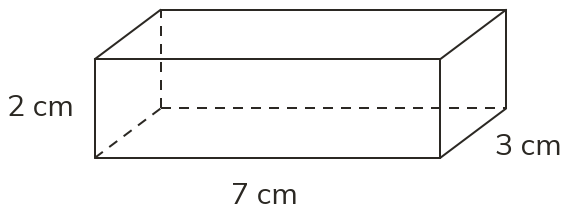
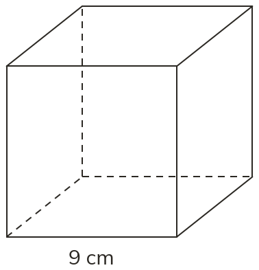

A net folds up into the solid
A net is a 2D shape that folds into a 3D solid. Edges that meet must be the same length.
A net is a 2D shape that folds to make a 3D solid; matching edges must be the same length.
A cardboard box folds flat into a net before it folds up; knowing its faces lets you find how much material covers it.
Work down the page at your own pace. Write every answer in your book first, then click to check it.
Read each card, then follow the worked examples one step at a time.

A net is a 2D shape that folds into a 3D solid. Edges that meet must be the same length.

A solid can have several different nets. Each arrangement of the faces still folds into the solid.
Pick an answer. If it's wrong, the feedback tells you which mistake it was.

Read each card, then follow the worked examples one step at a time.

A cuboid has three pairs of identical faces. Surface area = 2(lw + lh + wh). e.g. a 5 × 2 × 3 cm cuboid: 62 cm².

A cube's six faces are identical squares. So its surface area is 6 × (edge length)².


Pick an answer. If it's wrong, the feedback tells you which mistake it was.


Finished? Next lesson: 9.13.2 Volume of Cuboids.
Log in, then search for a code to practise that skill.
Videos, worksheets and more on each part of this lesson.